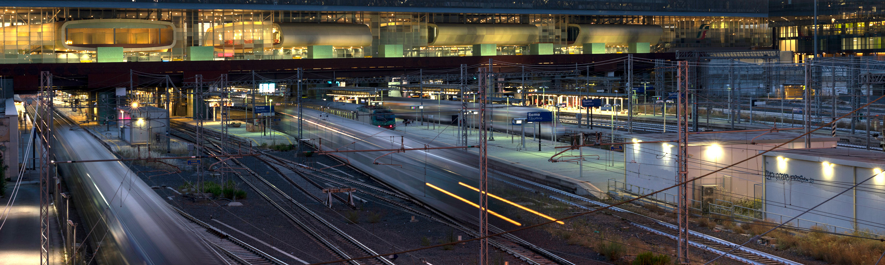

Principali impatti sull’economia nazionale
Diretto e indiretto
La spesa effettuata agisce come momentaneo aumento della domanda di beni e servizi.
L’incremento di domanda stimola il fatturato delle imprese nazionali lungo le catene del valore.
PIL / spesa = 0,8
Nettando gli scambi intermedi si stima l’impatto sul valore aggiunto nazionale.
Per soddisfare l’incremento di produzione si impegnano specifiche unità lavorative.
Aggiuntivo indotto
I guadagni di famiglie, governo e imprese tornano nell’economia come ulteriore spesa e alimentano altro fatturato.
PIL / spesa = 0,6
Il contributo aggiuntivo al PIL generato dalla reimmissione dei redditi nell’economia.
I posti di lavoro a tempo pieno attivati dalla domanda aggiuntiva che i nuovi redditi mettono in circolo.
RFI ha promosso un’analisi sugli impatti socio-economici in Italia degli investimenti effettuati sulla rete ferroviaria nazionale nel 2025.
La valutazione è stata realizzata utilizzando un modello macroeconomico dettagliato a livello provinciale e multisettoriale di tipo Social Accounting Matrix (SAM) su dati ISTAT 2022, che si colloca tra gli strumenti di elezione nelle best practices internazionali per questa tipologia di analisi.
Lo scenario di analisi è stato costruito utilizzando la spesa per investimenti (nettata delle importazioni dall’estero) per la progettazione e la realizzazione di nuove infrastrutture ferroviarie e l’ammodernamento delle preesistenti come shock di domanda nazionale di beni e servizi (distribuita nel periodo di riferimento) alla quale il modello economico ha “reagito”, restituendo una stima del contributo di tale spesa alla formazione dei principali indicatori economici della nostra economia.
Tale contributo rappresenta una stima parziale in quanto contabilizza unicamente gli effetti della fase di cosiddetto “cantiere”, ovvero quella in cui si dispiegano gli effetti della spesa attraverso l’incremento della domanda e non considera invece gli effetti di “regime” nell’arco della vita utile dell’infrastruttura determinati dal successivo stimolo di “offerta” di servizi di trasporto nuovi e/o migliori. Inoltre, gli effetti catturati dal modello sono da leggersi al lordo di un eventuale investimento controfattuale. Pertanto, per ottenere un effetto differenziale della spesa, confrontabile con altre tipologie di modelli, il moltiplicatore ottenuto andrebbe nettato di una crescita tendenziale o dell’effetto di investimenti alternativi.
Allo stesso tempo va però specificato che, per sue caratteristiche, il modello utilizzato considera la propagazione degli effetti nell’economia contabilizzando gli effetti diretti della spesa, quelli indiretti derivanti dalla propagazione della spesa lungo le catene del valore nazionali attivate e anche quelli indotti, ovvero determinati dalle reimmissione nell’economia dei guadagni di famiglie, governo e imprese sotto forma di ulteriore spesa, che risultano più rilevanti ma associabili in maniera meno netta alla spesa (vedi la spiegazione di dettaglio inclusa nel Rapporto Tecnico).
Ne consegue una stima improntata a criteri di prudenza e ragionevolezza.
L’analisi ha utilizzato come shock di domanda la spesa nel 2025 di circa 10 miliardi di euro effettuata da RFI in Italia (quindi al netto delle importazioni dall’estero) per investimenti sulla rete ferroviaria nazionale. La spesa è geograficamente distribuita e settorialmente concentrata nei comparti delle costruzioni, della metallurgia e delle forniture energetiche. I suoi esiti mostrano che tale spesa è in grado di generare un contributo diretto e indiretto al PIL di 8,6 miliardi registrando conseguentemente un moltiplicatore della spesa pari a 0,8 in linea con quanto riportato nella valutazione d’impatto della spesa PNRR svolta dal MIMS (moltiplicatore impatto/spesa pari a 0,63) ed un relativo contributo all’occupazione di 112 mila posti di lavoro a tempo pieno. Se si considerano anche gli impatti indotti, il contributo aggiuntivo al PIL è di 6,2 miliardi di euro con un moltiplicatore di 0,6 e l’occupazione aggiuntiva è pari a 68 mila posti di lavoro a tempo pieno.
Gli effetti degli investimenti di RFI nel periodo analizzato non risultano soltanto positivi e significativi, ma anche diffusi, sia geograficamente che settorialmente. Infatti, la domanda aggiuntiva di beni e servizi si dimostra in grado di stimolare efficacemente le dinamiche di interdipendenza di molteplici settori industriali e le relative catene del valore distribuite in tutte le regioni italiane propagando gli effetti in tutta l’economia nazionale.
Articolazione degli investimenti per linea di intervento
Articolazione degli investimenti per regione e linea di intervento
Gli investimenti effettuati da RFI nel 2025 sono pari a 10,4 miliardi di euro e si distribuiscono in quattro principali linee di intervento:
La maggior parte della spesa è quindi indirizzata alla crescita e allo sviluppo infrastrutturale, con l’obiettivo di colmare il divario infrastrutturale tra il Nord e il Sud del Paese, sfruttando il CdP-Investimenti e il PNRR. Questo intervento punta a innalzare gli standard prestazionali della rete e migliorare la connettività complessiva del sistema Paese.
Un’altra importante area di intervento del Piano riguarda la manutenzione e l’adeguamento degli asset esistenti, ormai obsoleti. L’usura delle infrastrutture, combinata con la concentrazione del traffico ferroviario su specifiche linee e stazioni, contribuisce infatti all’amplificazione dei ritardi, dovuta anche alla carenza di hub ferroviari che possano competere in termini di capacità e funzionalità con quelli di Roma e Milano.
Il dato di input relativo alla spesa di RFI per il 2025 è stato ripartito a livello regionale in base alla distribuzione territoriale del piano RFI 2021-2024.
Ripartizione degli investimenti nel 2025 per settore
Articolazione degli investimenti per regione e per settore
Per quanto riguarda l’allocazione settoriale degli investimenti, il principale settore coinvolto è quello delle Costruzioni. Il 50% degli investimenti, pari a oltre 5 miliardi di euro, è infatti destinato al settore delle Costruzioni, che risulta essere il principale settore coinvolto per la specificità degli interventi che riguardano principalmente il rinnovo e lo sviluppo delle infrastrutture.
Il restante 31,8% degli investimenti (escluso il settore residuale “altro” pari al 18,2%) è invece distribuito tra i settori della Programmazione e Consulenza Informatica (1,2 miliardi di euro), delle Attività Metallurgiche (circa 0,6 miliardi), delle Consulenze legali e tecniche (oltre 1 miliardo) e della Fabbricazione di Apparecchiature Elettriche (quasi 0,5 miliardi complessivi).
Impatti diretti, indiretti e indotti sulle dimensioni principali
L’investimento di RFI ha un impatto sulle principali dimensioni, ovvero sul contributo al valore aggiunto, alla produzione, all’occupazione, ai redditi delle famiglie e al gettito fiscale, analizzate attraverso effetti diretti, indiretti e indotti:
Sia la componente indiretta che indotta ammontano a più dell’impatto generato direttamente dal piano di investimento.
Articolazione regionale del valore aggiunto
Articolazione provinciale del valore aggiunto
A livello provinciale, grazie alla presenza di hub ferroviari di primaria importanza, le province che beneficiano maggiormente in termini di creazione di valore aggiunto diretto, indiretto e indotto sono, in ordine, Roma (851 milioni di euro), Milano (843 milioni di euro) e Napoli (754 milioni di euro).
Valore aggiunto per regione e principali settori economici
Articolazione geografica degli impatti: regioni e province
Articolazione settoriale degli impatti
Comparando la spesa per gli investimenti con la disaggregazione geografica e settoriale del valore aggiunto, si può osservare come le regioni più impattate non siano necessariamente quelle in cui è stata concentrata la maggiore spesa. Ad esempio, con 1,9 miliardi di euro di investimenti, il Lazio si colloca all’ottavo posto per volume di spesa, ma risulta essere la quarta regione per impatto sul PIL, con un incremento del valore aggiunto pari a circa 1,2 miliardi di euro.
Valore aggiunto, produzione e occupazione per regione
Il grafico mostra l’impatto sul valore aggiunto, sulla produzione e sull’occupazione per regione, suddiviso nelle sue tre componenti: impatto diretto, indiretto e indotto.
Focalizzandoci sul valore aggiunto, si osserva come il Veneto, la regione che beneficia maggiormente dagli investimenti del Piano Industriale di RFI, abbia il più elevato impatto diretto.
Tuttavia, poiché non solo i settori direttamente coinvolti, ma anche quelli interconnessi attraverso la catena del valore beneficiano in maniera indiretta e indotta della spesa, alcune regioni, fra cui la Lombardia con un impatto diretto inferiore rispetto a Veneto e Campania, ricevono un contributo complessivo maggiore grazie alla componente indiretta e indotta.
Per maggiori dettagli sulla metodologia dell’analisi di impatto, è possibile consultare il Rapporto Tecnico.